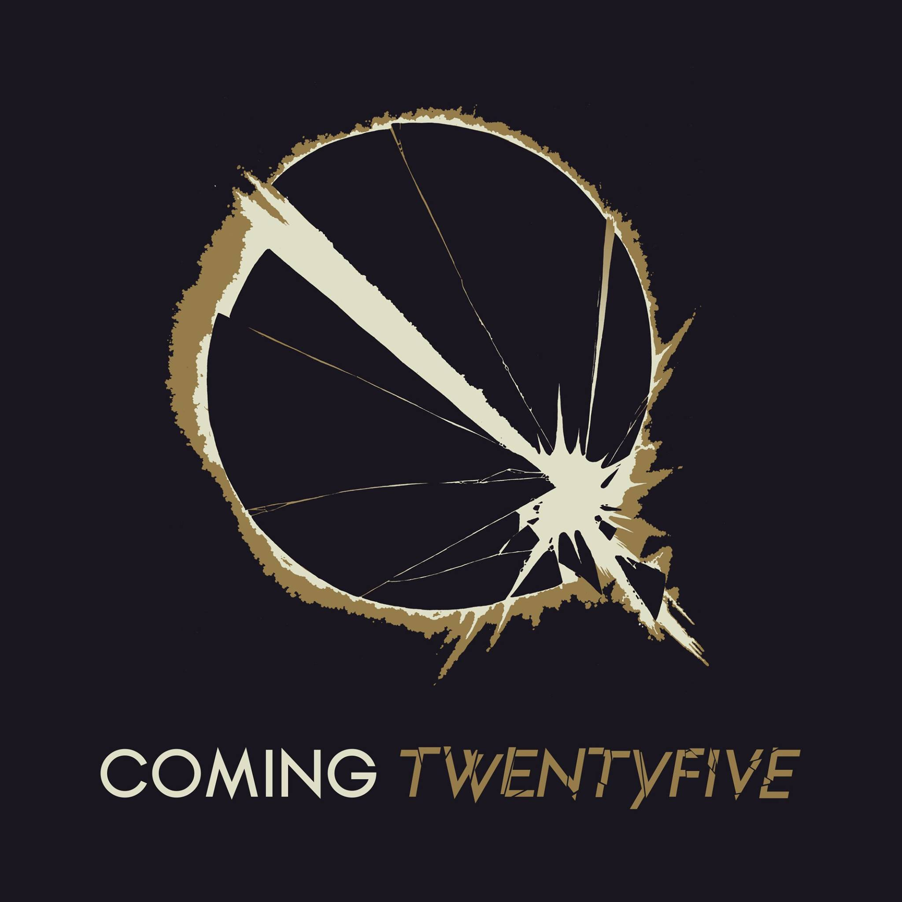

Siete años hemos tenido que esperar para el regreso de Jamiroquai, la banda británica liderada por el carismático Jay Kay publica su nuevo disco “Automaton”. ¿Ha cumplido con las expectativas? La respuesta es un claro SI.
Mas infoRepasemos el ultimo disco de JK y compañia que salio a la luz el 31 de marzo y esperemos que vengan a visitarnos.
“Heartworms” es el álbum de The Shins que más arreglos electrónicos presenta, y eso hace que a ratos suene algo denso y disperso (“Painting A Hole”, “Cherry Hearts)”. Pero las melodías de siempre siguen estando ahí.
Mas InfoPoco queda de la efervescencia de aquellos temas de antaño. Ni siquiera la distintiva voz del cantante se deja lucir tan descaradamente como en siguientes discos al de 2005, ni los temas guardan ese matiz psicodélico guitarrero que poco a poco han ido dejando atrás en favor del sonido más electrónico.
Mas infoEl entorno sonoro catedralicio resulta familiar, y las canciones brillan por los mismos motivos: sus melodías están indefectiblemente poseídas por maravillosas influencias digeridas y asimiladas en sus propios genes.
Mas InfoEstamos ansiosos por el nuevo disco de la banda californiana, que sale el 21 de abril, nos estan mostrando de a poco los distintos cortes que tiene el album y nos sorprendieron con su nuevo video. Revisenlo a continuación.
Es poco lo que sabemos de lo que esta armando Steven Wilson, lo que si sabemos es que nos esta llenando instagram con pequeños adelantos visuales y auditivos como este, lo demas lo pueden revisar Aca!
Tambien nos tienen en la espera, lo poco que sabemos es la foto que publicaron en facebook, será la portada? el concepto? supongo que pronto lo sabremos.

Visita el Facebook de la banda para mas info
Mientas aguardamos que confirmen fecha, repasen un poco su discografía con esta maravilla musical
‘Memories… Do Not Open’ es el primer álbum de The Chainsmokers. A los nuevos diez cortes se le suman los conocidos ‘Paris’ y su recienteMemories...Do_Not_Open.
Mas InfoComo la propia Neko Case admitió, más que un supergrupo los The New Pornographers son “un lugar de vacaciones”, unas vacaciones del rock and roll dentro del rock and roll.
Mas InfoEstamos ansiosos por el nuevo disco de la banda californiana, que sale el 21 de abril, nos estan mostrando de a poco los distintos cortes que tiene el album y nos sorprendieron con su nuevo video. Revisenlo a continuación.
Es poco lo que sabemos de lo que esta armando Steven Wilson, lo que si sabemos es que nos esta llenando instagram con pequeños adelantos visuales y auditivos como este, lo demas lo pueden revisar Aca!
Tambien nos tienen en la espera, lo poco que sabemos es la foto que publicaron en facebook, será la portada? el concepto? supongo que pronto lo sabremos
Visita el Facebook de la banda para mas info
Mientas aguardamos que confirmen fecha, repasen un poco su discografía con esta maravilla musical